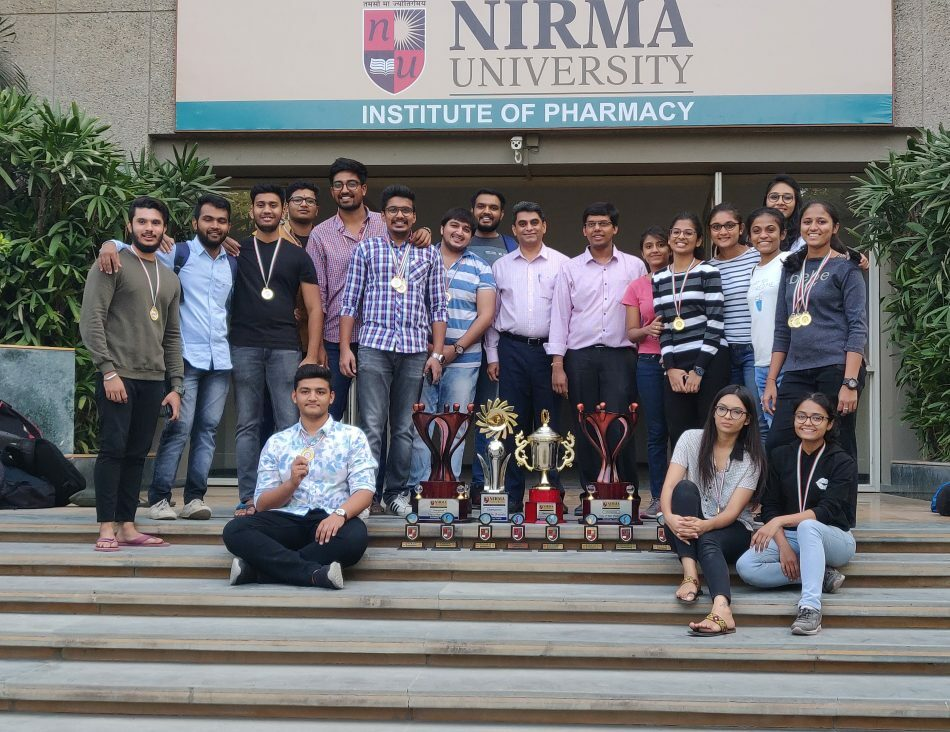

The Institute of Pharmacy at Nirma University, Ahmedabad was established in 2003 to train skilled professionals in pharmaceutical sciences. It offers a range of PCI-approved programs including the four-year Bachelor of Pharmacy (B.Pharm), the six-year Doctor of Pharmacy (Pharm.D), and two-year Master of Pharmacy (M.Pharm) with specialisations in areas such as Pharmaceutics, Pharmacology, Regulatory Affairs, and Pharmaceutical Analysis. The institute's curriculum combines academic study with hands-on training in modern labs, and it prepares students for careers in healthcare, research, and the pharmaceutical industry.